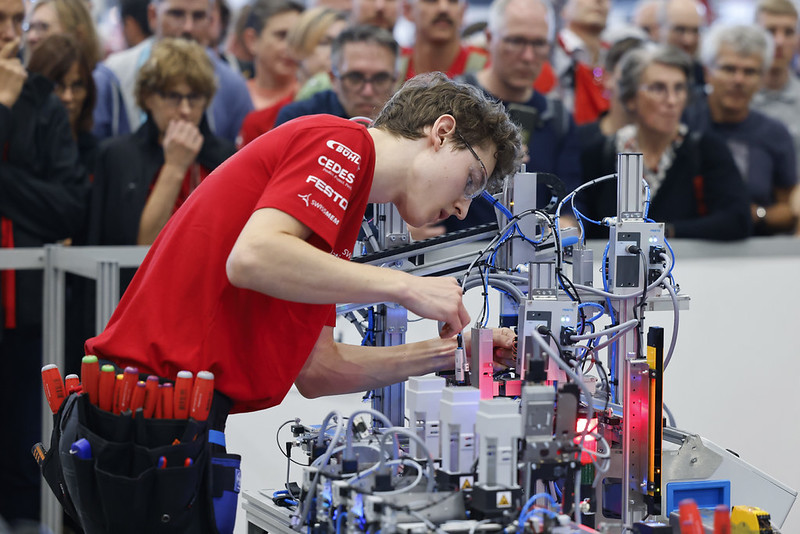

Enrico Putzi
B.Sc. Elektrotechnik & Informationstechnologie
ETH Zürich · Teaching Assistant (NUS)
Coach SwissSkills & WorldSkills
Mechatronik
Passerelle
Ergänzungsprüfung
WorldSkills Lyon (Mechatronics)
Medallion for Excellence & Sustainability Award
SwissSkills / IndustrySkills
1. Rang (Schweizermeister Automatiker)
Automatiker EFZ
Berufsausbildung mit Berufsmaturität
WorldSkills & Auszeichnungen
Erfahrungen und Resultate auf nationaler und internationaler Ebene.
Medallion for Excellence
Auszeichnung für herausragende Leistungen auf Weltniveau bei den WorldSkills in Lyon (Mechatronics). Zeigt Präzision, fundiertes Fachwissen und kühlen Kopf unter höchstem Zeit- und Leistungsdruck.
Sustainability Award
Gewinner des internen Effizienzwettbewerbs für den geringsten Druckluftverbrauch während der Aufgabenstellung. Ein Beweis für ressourcen- und energieeffiziente Systemarchitektur.
Aktuelle Rollen
WorldSkills & SwissSkills Coach
Weitergabe von Wissen und Praxiserfahrung: Vorbereitung, Mentoring und Coaching von zukünftigen Kandidatinnen und Kandidaten im Bereich Mechatronik.
Teaching Assistant (NUS 1)
Leitung von Übungsgruppen im Fach Netzwerke und Schaltungen 1. Erstellung und Aufbereitung von verständlichen Übungsmaterialien und Notizen für Studierende.